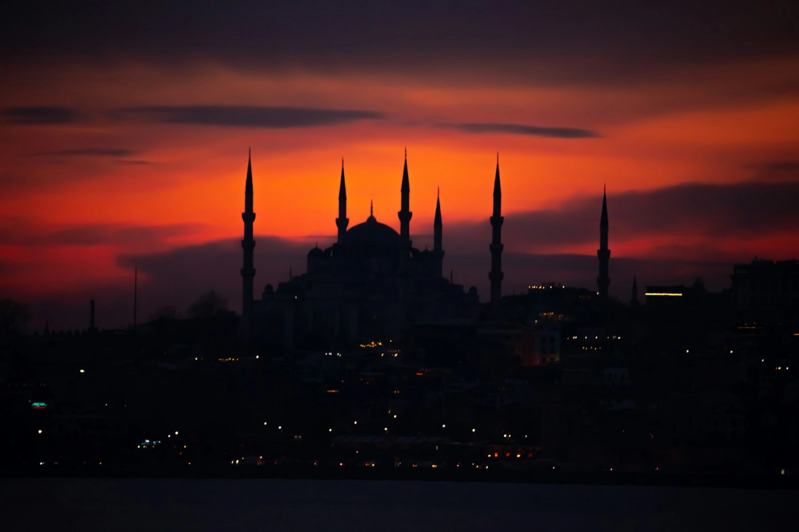

Gallery
Houses of Allah around the world — and, soon, snapshots of life at Masjid Maryam. A masjid is its people, not just its walls.
Istanbul, Türkiye · Photo: Safi Noorzai
One ummah
Houses of Allah around the world
Every masjid on earth faces the same Qiblah. These photographs show some of the most beloved mosques of the ummah — they are not of Masjid Maryam. Select any photo to see it larger.
See it in person
The best view of the masjid is from inside it.
Join us for prayer at 143 Hogans Rd, Hoppers Crossing — and if you’ve never been inside a mosque before, you are warmly welcome to visit and ask us anything about Islam.